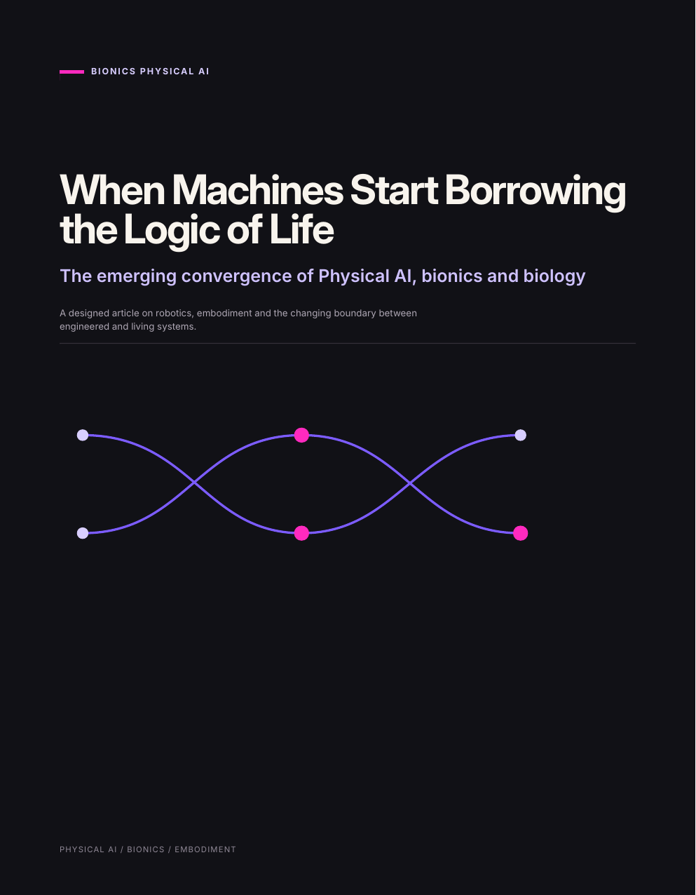

01 / 05
THE CONVERGENCE
When Machines Start Borrowing the Logic of Life
The opening article maps the convergence between Physical AI and biology: distributed sensing, living muscle, neural interfaces, cyborg organisms and grown cellular systems. It introduces Bionics Physical AI as a working label for this emerging territory.